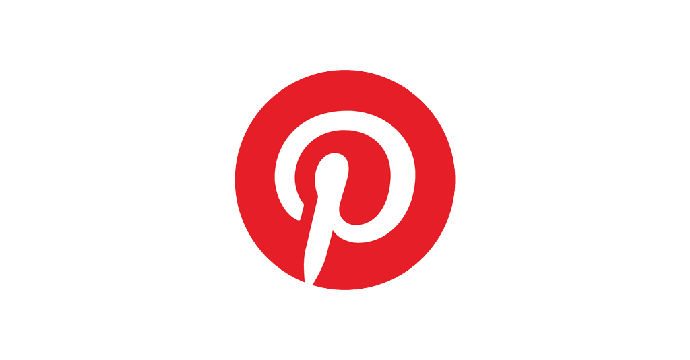

My Portfolio
I am Lin Htet Aung, a 19-year-old from Monywa. Football has been a passion of mine since childhood, and I've always enjoyed watching films. I completed high school in 2020 and am currently a CDM student. Initially, I joined the math class at Simbolo with the intention of entering the AI field. However, I discovered it wasn't the right fit for me. Nevertheless, I've found a liking for coding and have decided to pursue web development by joining the class here at Simbolo.
Skills and Expertise
- Intermediate English Speaker: Comfortable communicating in English with a solid understanding of language fundamentals.
- Fitness Enthusiast and Amateur Footballer: Dedicated to maintaining an active lifestyle with a keen interest in health and wellness.
- Quick Learner: Demonstrates agility in acquiring new skills and knowledge when deeply interested and curious about the subject.
- Effective Communicator: Able to connect with individuals on a personal level, demonstrating a keen understanding of their communication styles. Recognized for a friendly, charming, and humorous approach.
Projects Display

Instagram Redesign
A redesign of the Instagram interface with a focus on improved user experience and modern design.
Visit Instagram
Letterboxd Movie Tracker
A movie tracking application inspired by Letterboxd, allowing users to log, review, and discover films.
Visit Letterboxd

Pinterest Redesign
A redesigned version of Pinterest with enhanced features for organizing and discovering creative content.
Visit Pinterest
Education and Experience
Completed high school in 2020 with distinction in chemistry. Currently expanding knowledge through self-directed online learning and enrolled in my first class post-high school.